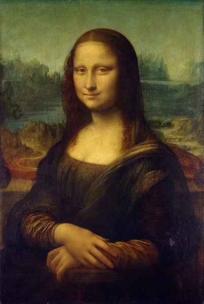

Wikipedia es una enciclopedia libre, políglota y editada de manera colaborativa. Es administrada por la Fundación Wikimedia, una organización sin ánimo de lucro cuya financiación está basada en donaciones.
Google es una compañía principal subsidiaria de la multinacional estadounidense Alphabet Inc.
La ONU fue fundada en 1945.
La Gioconda por Leonardo Da Vinci. 1503-1519.